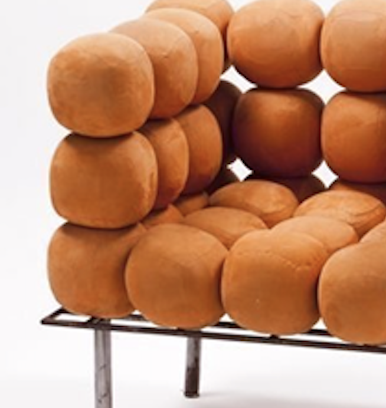
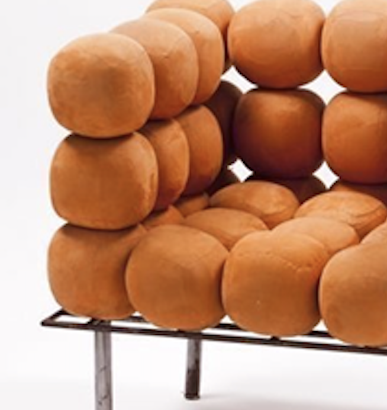

Archizoom Associati (Groupe de designers italiens)
Fauteuil "Boulle"
Circa 1968
Edition : Poltronova, Italie
Description : Design Radical, Anti-Design, Pop Art, Futuriste, Matériaux Structure en métal laqué ou chromé, Ensemble de coussins sphériques (boules) en mousse de polyuréthane recouverte de tissu ou de velours.
Structure : Le fauteuil repose sur une structure de base simple et discrète en Métal Tubulaire (ou Acier laqué/chromé) qui sert de socle, permettant de supporter le poids des coussins. L'ensemble du fauteuil est constitué de modules en Mousse de Polyuréthane de forme sphérique, tous de même taille, qui sont maintenus ensemble, souvent par une fixation interne ou par la tension du revêtement.
Dimensions : H. (Hauteur totale) : 70 - 75 cm, L. (Largeur) : 80 - 85 cm, P. (Profondeur) : 80 - 85 cm, H. Assise (Hauteur de l'assise) : 35 - 40 cm (l'assise est très basse)